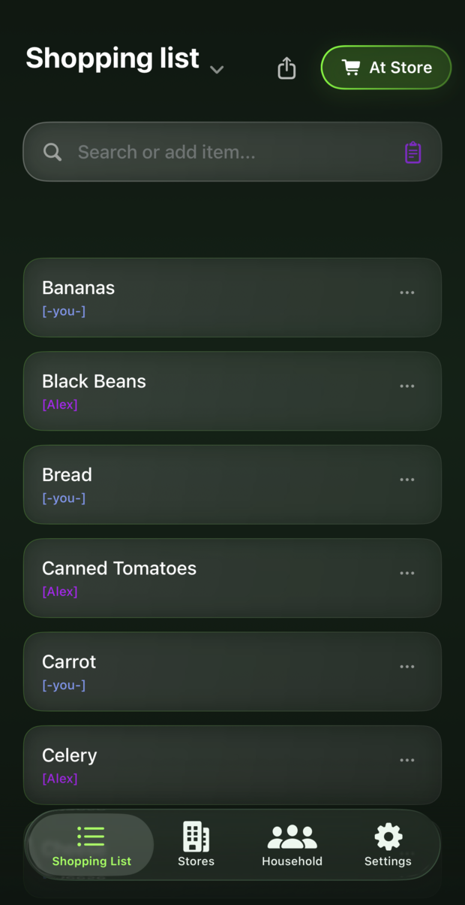
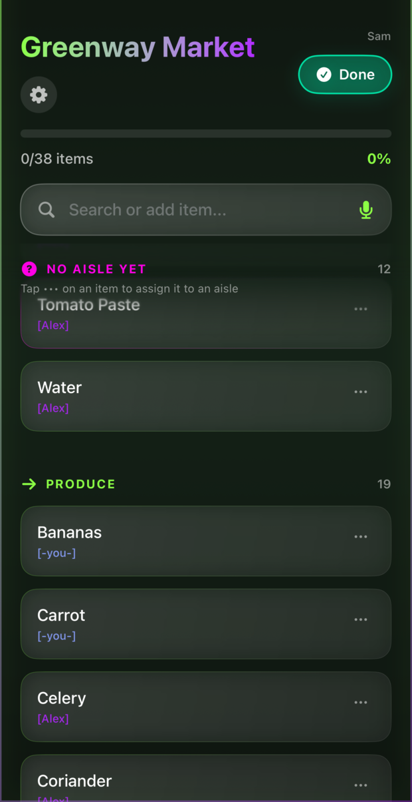
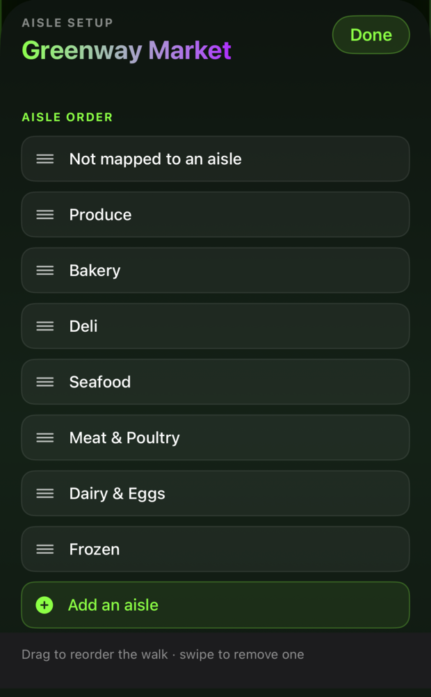
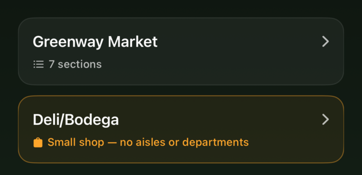
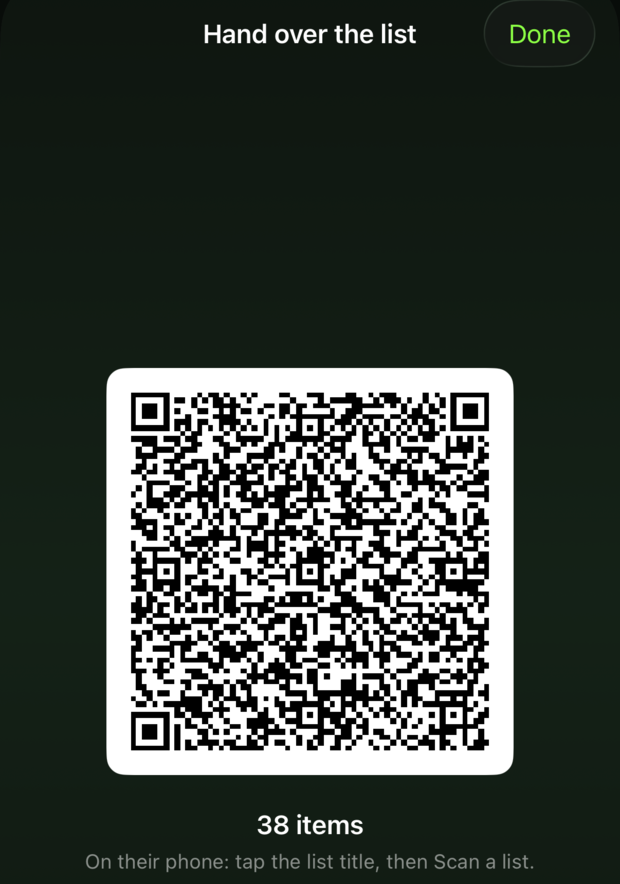
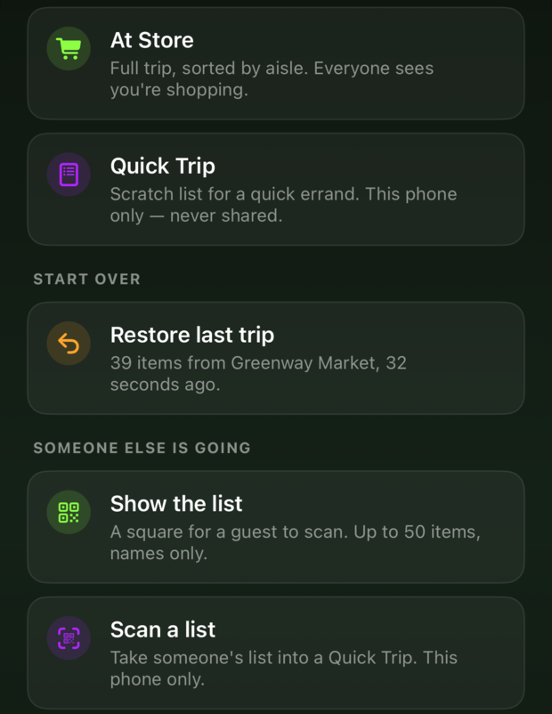

Honey, get dill?
One shopping list your whole household writes on, live, from every phone in the house.
In private beta. Not on the App Store yet.

The idea
Most households run the list badly, and not for want of trying. One person keeps it and becomes a bottleneck. Or it is a note on the fridge that is not with you in the shop. Or it is texts, and half of them arrive after you have already paid.
Got Dill is one list, open on every phone in the house at once. Add something and it is on the other phone before you have put yours down. No sending it, no sync button, no second copy quietly going stale. Every line says who put it there, so a mystery item has someone to ask.
Anyone can add. One person shops. Nobody has to be asked to check the list.
Alex added dill from the other room. It is on your phone already.
And then, at the shop
This is the second thing the app does, and it only matters once you have arrived. Sorting a list into Dairy, Produce and Bakery is tidy, and it is useless standing in a shop: it describes the food rather than the building, so you still walk back for the yoghurt.
Say you are at the shop and the list regroups under that shop's aisles, in the sequence you move through it. Skip it entirely if you would rather not bother, and the list is just a list.
Sorted by category
Three trips across the shop, in the wrong order.
Sorted by your walk
One pass, front of the shop to the back.
At the store
One person shops at a time. The rest of the household sees a trip is underway, so nobody arrives home with a second bag of onions.
Anything the app has not placed yet sits in its own group at the top, rather than being quietly guessed at and filed in the wrong aisle.

Your shop, your order
The app makes a first guess at where things live, and you correct it by dragging. That order is yours. It is not a chain-wide floor plan, and it does not reset because the shop moved the crisps.
Tell it once where something lives and it remembers, for you and for everyone else in the house.

More than one shop
Keep as many shops as you use. Each one carries its own layout, so the same list comes out in a different order depending on where you have gone.
A small shop with no aisles worth mapping is allowed to just be a list. You are not made to describe a bodega aisle by aisle before you can buy milk in it.

Handing it over
Hold up a square, they point their phone at it, and your list lands on theirs. No account of yours, no invitation, and no access to your history or to anything you write afterwards.
It arrives as a scratch list on their phone alone. Nothing is uploaded, and it works with no signal at all.
Adding someone to the household is still there for the people who live there. This is for the ones who do not.

How you want to shop
A full trip is sorted by aisle and visible to the household, so nobody buys a second bag of onions. A quick trip is a scratch list that lives on your phone, syncs nowhere, and never turns into a suggestion.
And if a trip ends badly, at the wrong shop or cut short, putting the list back is one tap.

Also in the box
Reel off half a dozen things while your hands are busy. They land as separate items, and nothing is added until you have looked at it.
Point the camera at a page or a screenshot and the ingredients come off it as items, rather than as a wall of text you retype.
Finished trips become suggestions, so next week is mostly tapping things you already buy instead of spelling them out again.
Everyone gets one, and it tints their name under every line they add. On a busy list it is the quickest way to tell whose idea something was.
How many trips, how many items, how long they took. Counted on your own phone, from trips it actually watched finish. Nothing is estimated.
Anything that throws work away says what you are about to lose, and counts it. Signing out names every list on the phone it is about to clear.
Attach pictures to an item when the words will not do it. The right jar, the brand on the label, the shelf you found it on last time. Everyone in the house sees them.
Pepsi, one two-litre bottle, get the diet one if they have it. Mark a note "just for this trip" and it is wiped when the trip ends, so next week does not inherit last week's instructions.
Straight answers